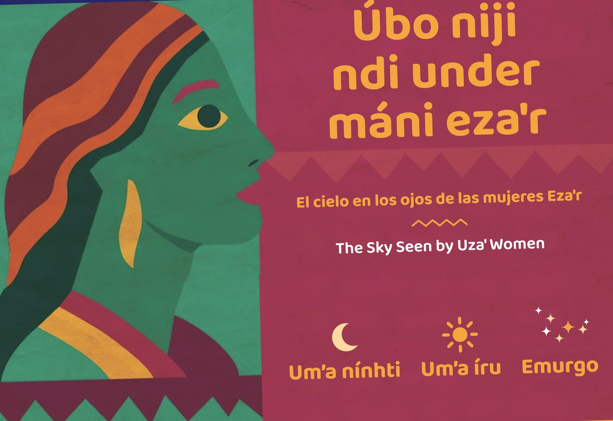
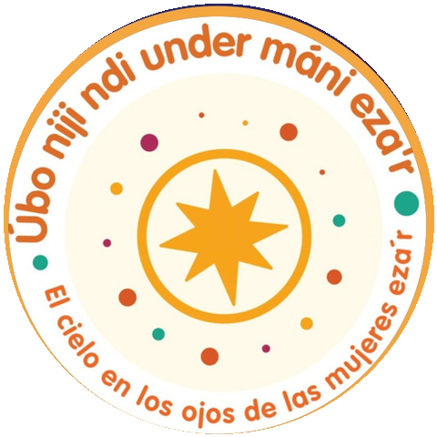
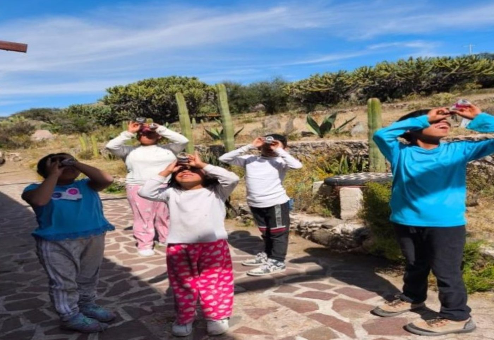
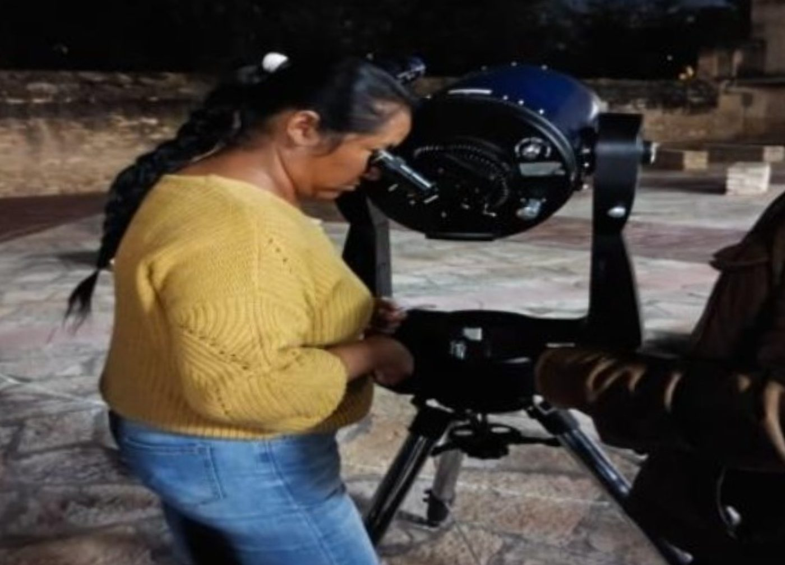
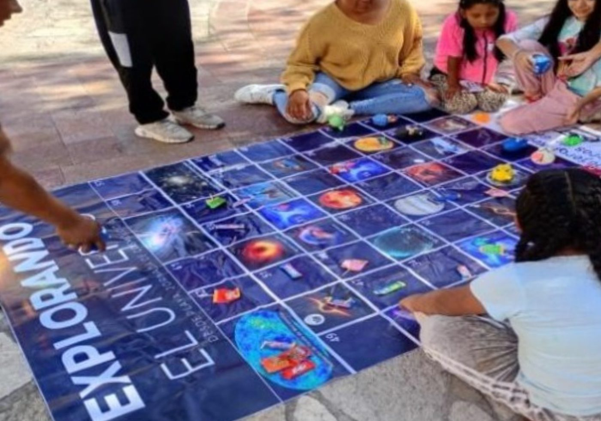
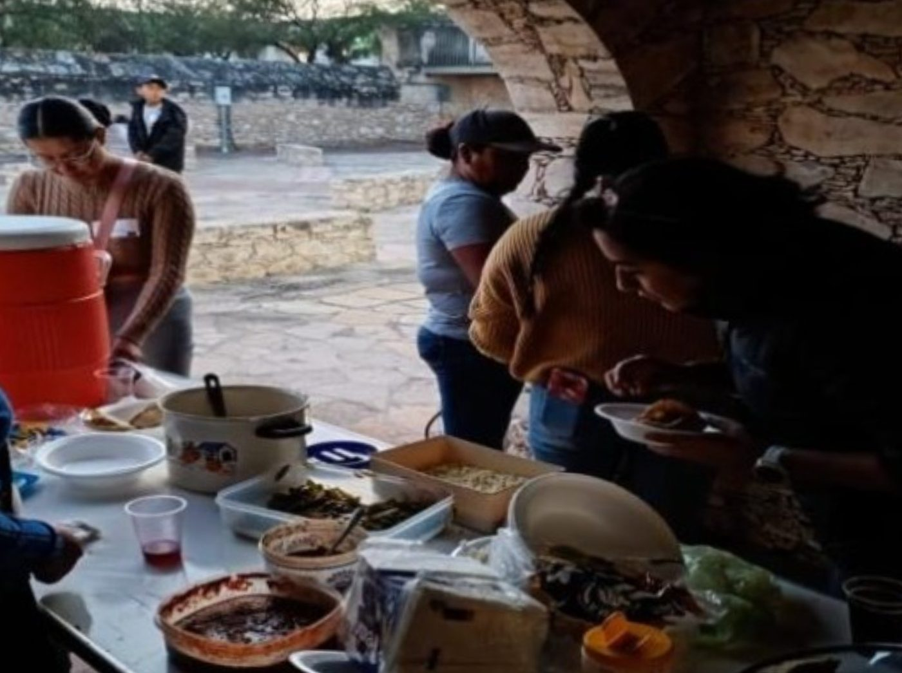

{{t.eyebrow}}
Úbo niji ndi under máni eza'r
{{t.subtitle}}
{{t.lede}}

{{t.popEyebrow}}
{{t.popTitle}}
San Luis de la Paz, Guanajuato · 2025
{{t.challengeEyebrow}}
{{t.challenge}}
{{t.howEyebrow}}
{{t.howTitle}}
-
{{t.how1}}
-
{{t.how2}}
-
{{t.how3}}
{{t.wordsEyebrow}}
{{t.wordsIntro}}
Um'a nínhti
{{t.moon}}
Um'a íru
{{t.sun}}
Emurgo
{{t.stars}}

{{t.impactEyebrow}}
{{t.impactTitle}}
-
{{t.impact1}}
-
{{t.impact2}}
-
{{t.impact3}}
{{t.galEyebrow}}
{{t.galTitle}}




{{t.teamEyebrow}}
{{t.teamTitle}}
{{t.team1Name}}
{{t.team1Role}}
{{t.team2Name}}
{{t.team2Role}}
{{t.team3Name}}
{{t.team3Role}}
{{t.contactLine}} gonzalez.alma@ugto.mx · @alxogm